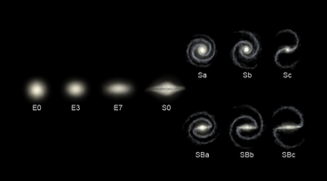

Table of Content
A galaxyis a system of stars, stellar remnants, interstellar gas, dust, and dark matter bound together by gravity.The word is derived from the Greek galaxies (γαλαξίας), literally 'milky'.
The space between galaxiesis filled with a tenuous gas (the intergalactic medium) with an average density of less than one atom per cubic metre. Most galaxies are gravitationally organised into groups, clusters and superclusters. The Milky Way is part of the Local Group, which it dominates along with the Andromeda Galaxy. The group is part of the Virgo Supercluster. At the largest scale, these associations are generally arranged into sheets and filaments surrounded by immense voids.Both the Local Group and the Virgo Supercluster are contained in a much larger cosmic structure named Laniakea.
Galaxies come in three main types: ellipticals, spirals, and irregulars. A slightly more extensive description of galaxy types based on their appearance is given by the Hubble sequence. Since the Hubble sequence is entirely based upon visual morphological type (shape), it may miss certain important characteristics of galaxies such as star formation rate in starburst galaxies and activity in the cores of active galaxies.Many galaxies are thought to contain a supermassive black hole at their center. This includes the Milky Way, whose core region is called the Galactic Center.
For more detailed information, visit this article.
Galaxies are vast collections of stars, gas, dust, and dark matter, bound together by gravity. They come in various shapes and sizes, with each one holding countless mysteries. Over the centuries, astronomers have made significant discoveries about these cosmic islands. Below is a table highlighting some of the most notable galaxies, when they were recognized, and interesting facts about each.
| Name | Year | Notable Fact |
|---|---|---|
| Milky Way | 1610 | Contains our solar system |
| M104 | 1781 | Known for its bright, extended central bulge |
In exploring the vast and varied realm of galaxies, we gain not only insight into the structure and evolution
of our universe but also a deeper appreciation for the scale and complexity of cosmic phenomena. Each
galaxy, from the familiar Milky Way to the distant Andromeda and the striking Sombrero Galaxy, represents a
unique and intricate tapestry of stars, gas, and dust, woven together by the forces of gravity. These
celestial islands not only illuminate our understanding of the cosmos but also inspire a sense of wonder and
curiosity. As we continue to explore and study these galaxies, we enhance our grasp of the universe's
history and our place within it, reminding us of the boundless mysteries that still await
discovery.